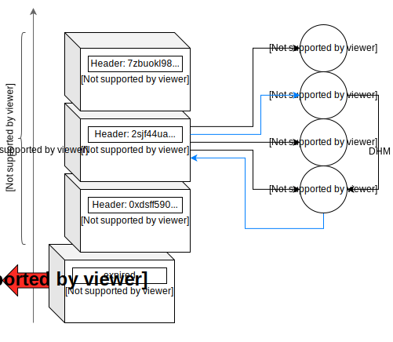

The first open-source messenger that guarantees absolute anonimity through a public ledger protocol.

noledger is a messenger implementation which obeys a strict protocol
to preserve anonimity of users that are connected to a single node.
The service is open-source and can be launched by anyone, completely free of charge,
requires no login nor KYC and can be accessed by any device with a browser,
or via HTTPs allowing two arbitrary users to communicate all around the globe.
Despite the praised end-to-end encryption, security and anonimity is not the
top priority of common messaging services. Routes, meta-data and often
personal information are leaked towards the central party (server) which allows
conversations to be reconstructed, or at least messages to be traced and routed
back to the users. noledger resolves these issues and offers a publicly accessible
JSON API to store time-limited messages which are committed to a central ledger
and subsequently distributed accross all clients that use the same node for messaging.
Trust towards the noledger node is always guaranteed by the non-exploitable
commit format defined by the protocol.